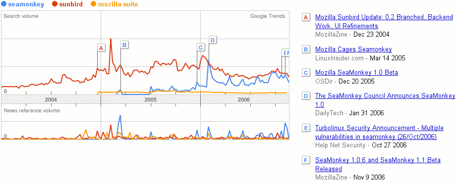

Google Trends
SeaMonkey vs. Sunbird vs. Mozilla Suite

Only data until November 2006 (before 1.1 release)
Google searches and news references only tell trends
Spikes correlate with our releases
next >